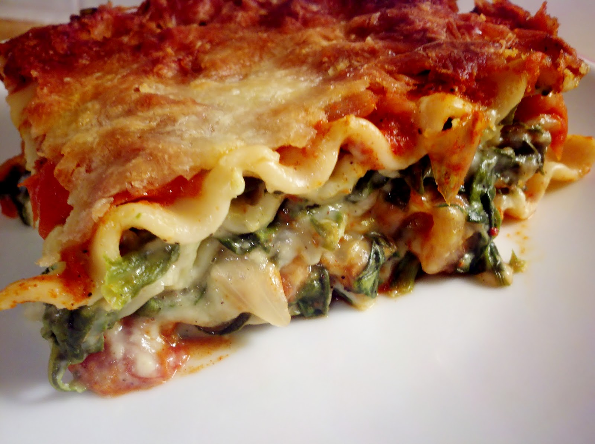

Spinach Lasagna

Lasagna, but vegetarian.
Ingredients
- Lasagna pasta sheets
- Stuff for Bechamel sauce
- Rahmspinat
- Cheese of all sorts
Steps
- Heat Rahmspinat.
- Make Bechamel sauce.
- Layer pasta sheets, spinach, Bechamel sauce and cheese repeatedly until used up.
- End top layer with loads of cheese.
- Bake in oven at ~200 degrees Celsius for 30-45 minutes, until the dish looks happy.